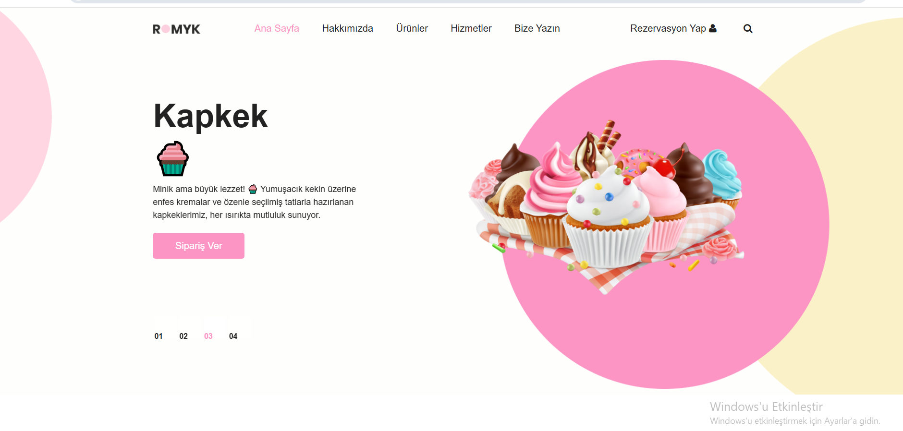
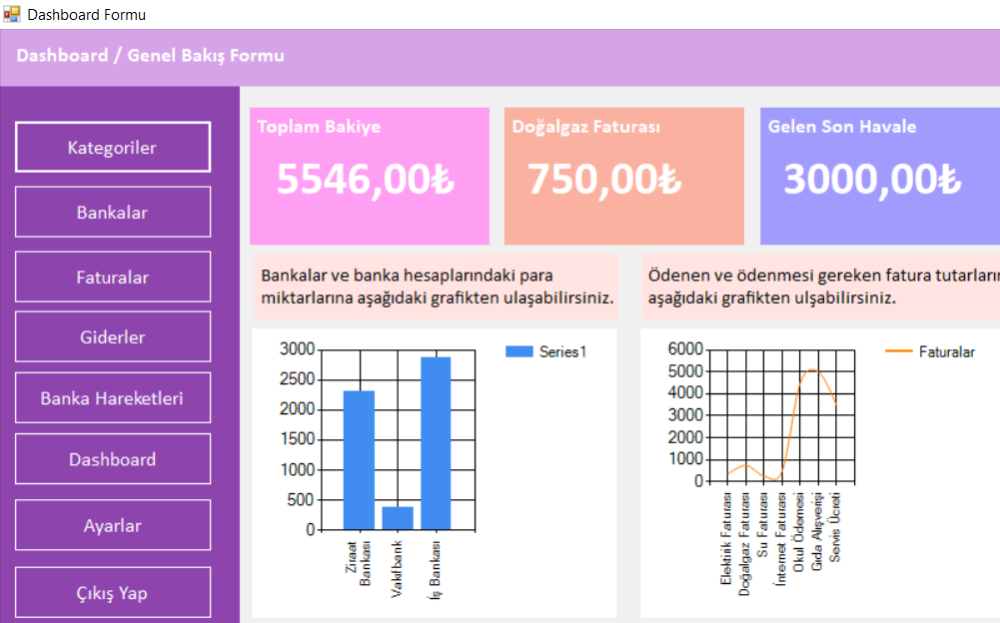
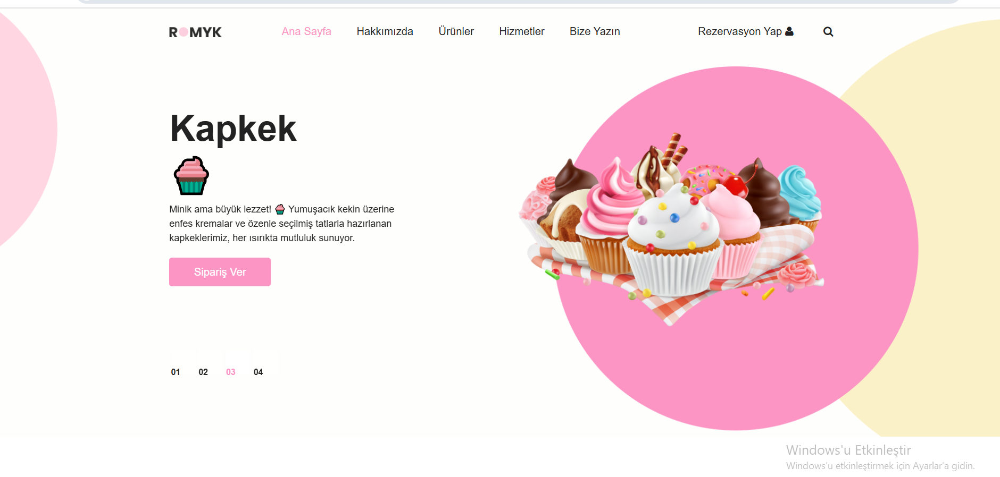
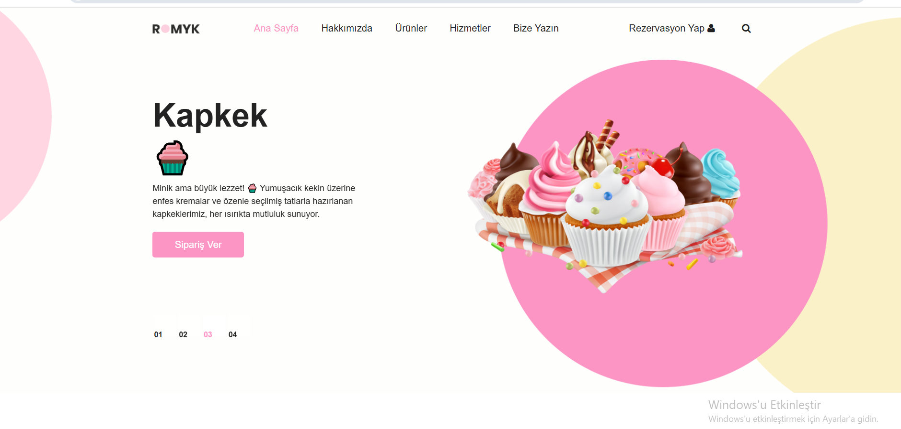
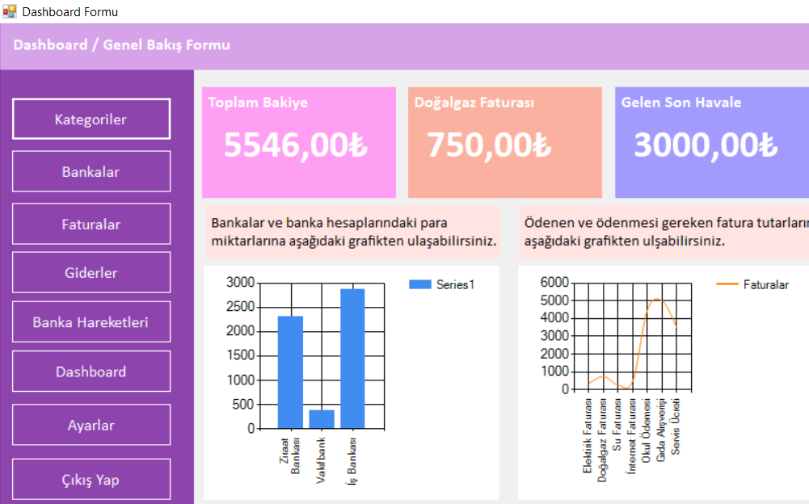
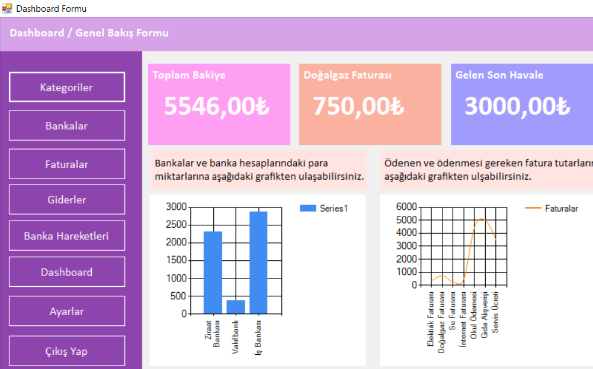

Merhaba, ben Emine Fıstık. 20 yaşındayım ve Nişantaşı Üniversitesi’nde Bilgisayar Programcılığı bölümü
öğrencisiyim.
Aynı zamanda Akademiq.Ai’de C# programlama dili üzerine eğitim alarak yazılım becerilerimi geliştiriyorum.
Web teknolojileri, veritabanı yönetimi ve arayüz tasarımı gibi alanlarda kendimi sürekli geliştirmeye odaklanıyor
; hem akademik hem de pratik bilgilerle donanım kazanmayı hedefliyorum.
Teknolojiye olan ilgim, yazılım dünyasında üretken ve yaratıcı çözümler geliştirme motivasyonumu her geçen gün
artırıyor.
.Net Developer & Web Geliştirici
Doğum Tarihi: 9 Eylül 2005
Yaş:20
Eğitim: Ön Lisans
Freelance: Müsait
İş Ve Proje Deneyimlerim
2024 Kasım - 2025 Haziran Acunmedya Akademi Öğrenci
(Öğrenci) Acunmedya Akademi’de C# programlama dili üzerine eğitim alarak, nesne yönelimli programlama, algoritma geliştirme ve yazılım temelleri konularında yetkinlik kazanmaya devam ediyorum.
2022-2023(6Ay) Bilgi İşlemGüngören Belediyesi
(Stajyer) Lise eğitimim sürecinde, Güngören Belediyesi Bilgi İşlem Müdürlüğü'nde staj yaparak kamu bilişim sistemlerinin işleyişine dair deneyim kazandım. Bu süreçte teknik destek, sistem takibi ve temel ağ işlemleri gibi alanlarda görev alarak hem teorik bilgimi pekiştirdim hem de saha tecrübesi edindim.
(Stajyer) E-ticaret alanında yaptığım staj süresince, pazaryeri yönetimi ve entegrasyon süreçlerine dair pratik bilgiler edindim. Ürün listeleme, sipariş takibi, entegrasyon paneli kullanımı ve veri güncellemeleri gibi temel görevlerde aktif rol alarak dijital satış süreçlerinin işleyişini yakından gözlemleme fırsatı buldum
Projelerim


*Hobilerim*
Boş zamanlarımda hem zihinsel hem de ruhsal olarak beni besleyen aktivitelerle ilgilenmeyi seviyorum.
Aşağıda ilgi duyduğum bazı alanları ve bu konularda ilham aldığım bağlantıları bulabilirsiniz:
Kitap Okumak: Yeni bilgiler edinmek ve farklı bakış açıları kazanmak için
Goodreads üzerinden kitap listeleri oluşturuyorum.
Kodlama: Web geliştirme ve programlama üzerine projelerimi
GitHub’da paylaşarak geliştiriyorum.
Müzik Dinlemek: Kod yazarken odaklanmamı sağlayan lo-fi ve chill müzikleri
Spotify Lo-Fi Beats
listesiyle dinliyorum.
Doğada Zaman Geçirmek: Yürüyüş yapmak ve doğayı fotoğraflamak bana ilham veriyor.
National Geographic’teki fotoğraf galerilerini sık sık inceliyorum.
Tasarım: Arayüz ve estetik üzerine ilham almak için
Dribbble ve
Behance platformlarını takip ediyorum.
Gitmeyi en çok sevdiğim yer:
İletişim ve Sosyal Medya
Benimle iletişime geçmek ya da çalışmalarımı takip etmek istersen aşağıdaki bağlantılardan ulaşabilirsin:


 

 
